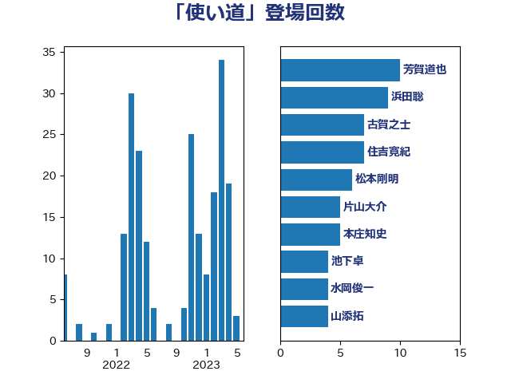

単語「使い道」

| 芳賀道也 | 国民民主党 | 10 回 |
| 浜田聡 | NHK党 | 9 回 |
| 古賀之士 | 立憲民主党 | 7 回 |
| 住吉寛紀 | 日本維新の会 | 7 回 |
| 松本剛明 | 自由民主党 | 6 回 |
| 片山大介 | 日本維新の会 | 5 回 |
| 本庄知史 | 立憲民主党 | 5 回 |
| 池下卓 | 日本維新の会 | 4 回 |
| 水岡俊一 | 立憲民主党 | 4 回 |
| 山添拓 | 日本共産党 | 4 回 |
| 小野泰輔 | 日本維新の会 | 4 回 |
| 青柳仁士 | 日本維新の会 | 3 回 |
| 西村康稔 | 自由民主党 | 3 回 |
| 蓮舫 | 立憲民主党 | 3 回 |
| 舟山康江 | 国民民主党 | 3 回 |
| 田島麻衣子 | 立憲民主党 | 3 回 |
| 田中健 | 国民民主党 | 3 回 |
| 玉木雄一郎 | 国民民主党 | 3 回 |
| 猪瀬直樹 | 日本維新の会 | 3 回 |
| 清水貴之 | 日本維新の会 | 3 回 |
| 河野太郎 | 自由民主党 | 3 回 |
| 柴田巧 | 日本維新の会 | 3 回 |
| 東徹 | 日本維新の会 | 3 回 |
| 守島正 | 日本維新の会 | 3 回 |
| 前川清成 | 日本維新の会 | 3 回 |
| 金子恭之 | 自由民主党 | 2 回 |
| 重徳和彦 | 立憲民主党 | 2 回 |
| 西岡秀子 | 国民民主党 | 2 回 |
| 藤巻健太 | 日本維新の会 | 2 回 |
| 羽田次郎 | 立憲民主党 | 2 回 |
| 石川香織 | 立憲民主党 | 2 回 |
| 田村まみ | 国民民主党 | 2 回 |
| 浅田均 | 日本維新の会 | 2 回 |
| 岸田文雄 | 自由民主党 | 2 回 |
| 山崎誠 | 立憲民主党 | 2 回 |
| 小沢雅仁 | 立憲民主党 | 2 回 |
| 小倉將信 | 自由民主党 | 2 回 |
| 倉林明子 | 日本共産党 | 2 回 |
| 伊藤孝恵 | 国民民主党 | 2 回 |
| 仁木博文 | 無所属 | 2 回 |
| 上田英俊 | 自由民主党 | 2 回 |
| ながえ孝子 | 無所属 | 2 回 |
| 鳩山二郎 | 自由民主党 | 1 回 |
| 高見康裕 | 自由民主党 | 1 回 |
| 青柳陽一郎 | 立憲民主党 | 1 回 |
| 青山繁晴 | 自由民主党 | 1 回 |
| 野村哲郎 | 自由民主党 | 1 回 |
| 道下大樹 | 立憲民主党 | 1 回 |
| 赤嶺政賢 | 日本共産党 | 1 回 |
| 谷田川元 | 立憲民主党 | 1 回 |
| 角田秀穂 | 公明党 | 1 回 |
| 西田実仁 | 公明党 | 1 回 |
| 西村智奈美 | 立憲民主党 | 1 回 |
| 萩生田光一 | 自由民主党 | 1 回 |
| 荒井優 | 立憲民主党 | 1 回 |
| 自見はなこ | 自由民主党 | 1 回 |
| 篠原豪 | 立憲民主党 | 1 回 |
| 石橋通宏 | 立憲民主党 | 1 回 |
| 石井苗子 | 日本維新の会 | 1 回 |
| 石井拓 | 自由民主党 | 1 回 |
| 田畑裕明 | 自由民主党 | 1 回 |
| 滝波宏文 | 自由民主党 | 1 回 |
| 渡辺周 | 立憲民主党 | 1 回 |
| 渡辺創 | 立憲民主党 | 1 回 |
| 浦野靖人 | 日本維新の会 | 1 回 |
| 浅野哲 | 国民民主党 | 1 回 |
| 池畑浩太朗 | 日本維新の会 | 1 回 |
| 森本真治 | 立憲民主党 | 1 回 |
| 森屋隆 | 立憲民主党 | 1 回 |
| 杉本和巳 | 日本維新の会 | 1 回 |
| 木村英子 | れいわ新選組 | 1 回 |
| 斎藤洋明 | 自由民主党 | 1 回 |
| 後藤茂之 | 自由民主党 | 1 回 |
| 平木大作 | 公明党 | 1 回 |
| 岡田克也 | 立憲民主党 | 1 回 |
| 岡本三成 | 公明党 | 1 回 |
| 山際大志郎 | 自由民主党 | 1 回 |
| 山田勝彦 | 立憲民主党 | 1 回 |
| 山本剛正 | 日本維新の会 | 1 回 |
| 尾身朝子 | 自由民主党 | 1 回 |
| 小森卓郎 | 自由民主党 | 1 回 |
| 宮路拓馬 | 自由民主党 | 1 回 |
| 宮本徹 | 日本共産党 | 1 回 |
| 奥下剛光 | 日本維新の会 | 1 回 |
| 堀井巌 | 自由民主党 | 1 回 |
| 城井崇 | 立憲民主党 | 1 回 |
| 吉田統彦 | 立憲民主党 | 1 回 |
| 吉田とも代 | 日本維新の会 | 1 回 |
| 前原誠司 | 国民民主党 | 1 回 |
| 佐藤正久 | 自由民主党 | 1 回 |
| 中西健治 | 自由民主党 | 1 回 |
| 上田勇 | 公明党 | 1 回 |
| おおつき紅葉 | 立憲民主党 | 1 回 |